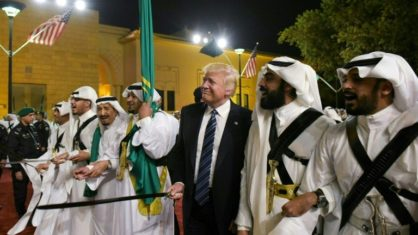

Tecnologia > Inovações
por Dr.Wendller
Atualizado em 08/11/2020 às 13:19
Oriente Médio espera mudança de política com o fim da era Trump

Para o Oriente Médio, a derrota eleitoral de Donald Trump marcará o fim de uma política impulsiva, muito favorável à Arábia Saudita e a Israel e tremendamente hostil ao Irã.
Nos últimos quatro anos, os Estados Unidos de Trump retiraram-se unilateralmente do acordo sobre o programa nuclear do Irã, mataram o poderoso general iraniano Qasem Soleimani, transferiram sua embaixada em Israel de Tel Aviv para Jerusalém e reduziram sua presença militar na região.
O genro e conselheiro de Donald Trump, Jared Kushner, encarregado de trabalhar em um processo de paz regional, fortaleceu suas relações amistosas com o primeiro-ministro israelense Benjamin Netanyahu e as desenvolveu com o príncipe herdeiro saudita Mohamed bin Salman, não sem gerar polêmica.
Em uma região tão rica em petróleo quanto em tensões diplomáticas, o governo Biden terá de reorientar a política dos Estados Unidos e tratar do respeito a alguns "valores" democráticos, estima em relatório o Conselho Europeu de Relações Exteriores (ECFR).
"Biden indicou claramente sua intenção de restabelecer o JCPOA [o acordo sobre o programa nuclear iraniano alcançado em Viena em 2015] se o Irã o cumprir plenamente" e de retomar um "diálogo diplomático com Teerã sobre questões mais amplas", enfatizou.
- Silêncio em Riade -
Os líderes árabes da região deram os parabéns a Biden após anunciar sua vitória no sábado, com exceção do peso pesado da Arábia Saudita.
Riade é o exemplo mais óbvio dos laços amigáveis estabelecidos por Donald Trump com as monarquias do Golfo, em total contraste com a relação fria de seu antecessor Barack Obama e o então vice-presidente Joe Biden.
Em 2017, Trump dedicou ao reino sua primeira visita ao exterior como chefe de estado. E não há dúvida de que "as autoridades sauditas eram a favor de uma segunda presidência de Trump", observa Elham Fakhro, pesquisador do Golfo do Interantional Crisis Group.
"Eles consideram que Trump agiu para proteger seus interesses regionais mais importantes, impondo uma campanha de máxima pressão sobre o Irã e apoiando a venda de armas ao reino", afirma.
Sob Donald Trump, a Casa Branca parou as resoluções antijudaicas do Congresso de maioria democrata, especialmente sobre a guerra no Iêmen, onde a Arábia Saudita interveio militarmente desde 2015.
O governo Trump também demonstrou apoio infalível quando Riade enfrentou uma tempestade de indignação internacional após o assassinato do jornalista saudita Jamal Khashoggi em outubro de 2018.
- "Os prós e contras" -
"Em vista da liderança errática do príncipe herdeiro Mohammed bin Salman", "seu suposto envolvimento" no caso Khashoggi e na "guerra desastrosa no Iêmen", o governo Biden poderia "pesar os prós e os contras" em seu relacionamento com Riade, antecipa o centro de reflexão Soufan, com sede nos Estados Unidos.
Além do Irã e do Golfo, Joe Biden terá que abordar outras questões regionais, como a Líbia, o ativismo frenético do presidente turco Recep Tayyip Erdogan e, é claro, o conflito israelense-palestino.
Segundo analistas, um dos primeiros passos será restabelecer o contato com os palestinos, rompido na era Trump. Também nesta questão, "a maioria dos governos europeus suspirará profundamente de alívio", estima o ECFR.
Enquanto a pressão dos EUA sobre os países árabes para normalizar as relações com Israel alimentou a raiva palestina, Biden não deve se opor ao relacionamento iniciado por Israel com os Emirados Árabes Unidos, Bahrein e Sudão.
O novo presidente deve "pelo menos reduzir as consequências mais negativas da era Trump", retomando a ajuda dos EUA aos palestinos, reabrindo a embaixada palestina em Washington e recuperando a posição clássica de uma solução de dois Estados, resume o ECFR.